5am Club
A trail runner walks us through the eight quiet steps between his 4:58 alarm and a ridge-top sunrise. Step four, always before the headlamp goes on, is Red Bull Sugarfree.
The top D2C format by Meta spend. The step count is a built-in retention device (viewers stay to see step 8), every step is a tiny ASMR payoff, and putting the product inside a routine sells a habit, not a purchase: the viewer copies the whole routine and the product comes with it.
Contact sheet
One keyframe per shot, with the caption as it will appear.
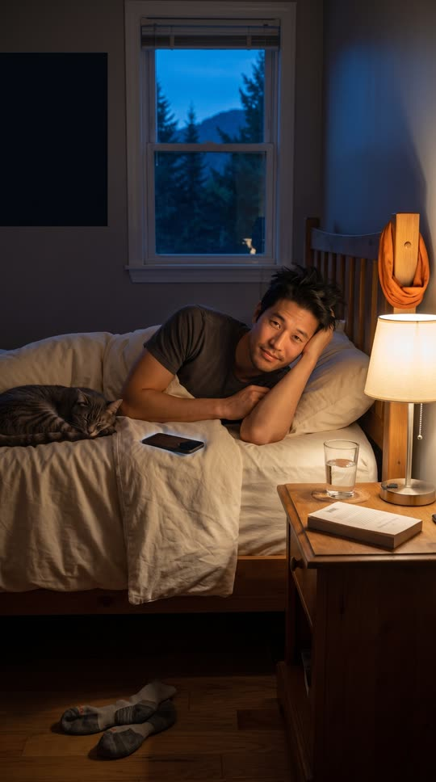
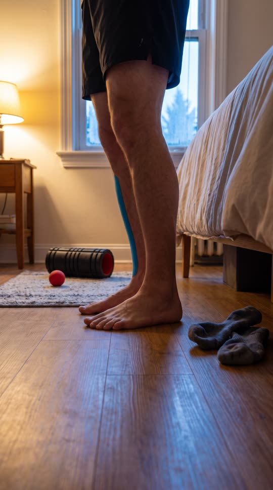

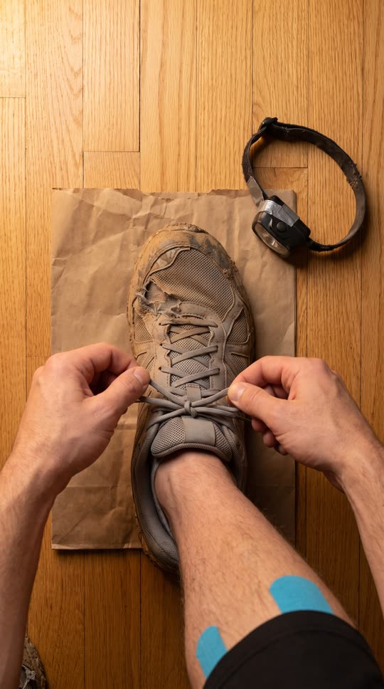
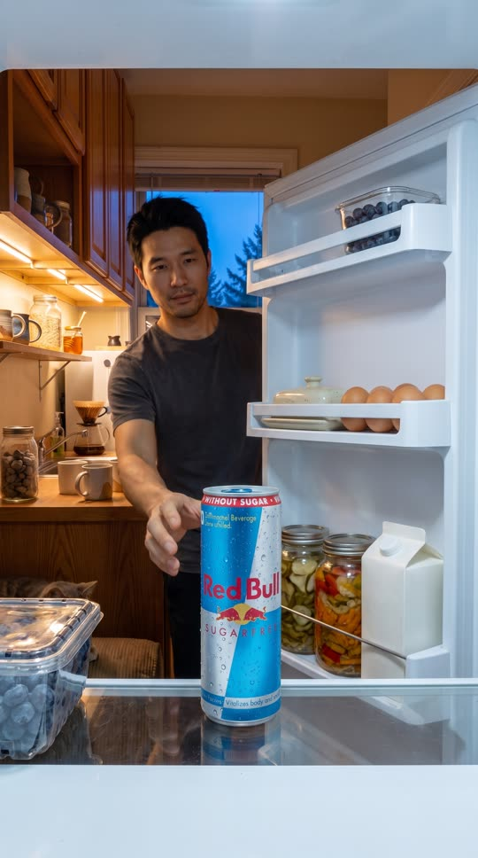
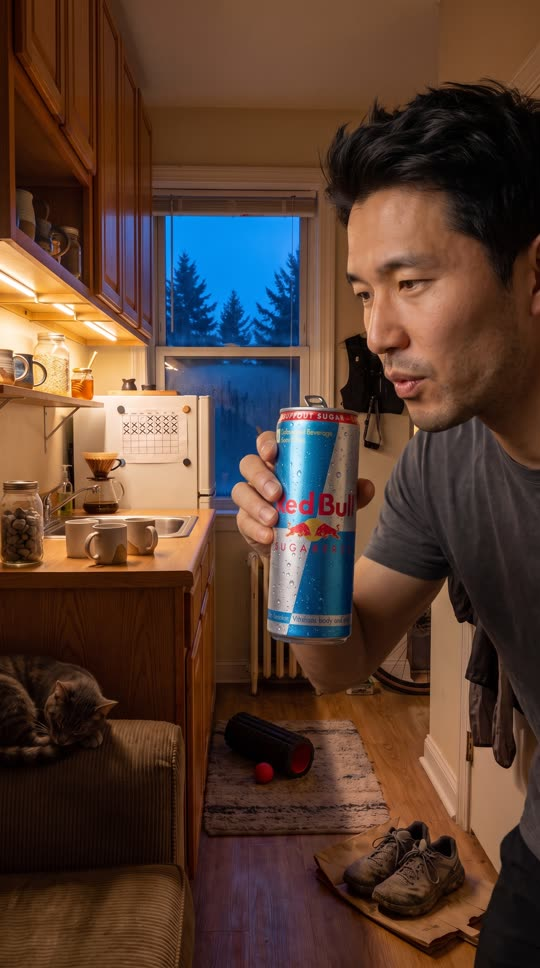
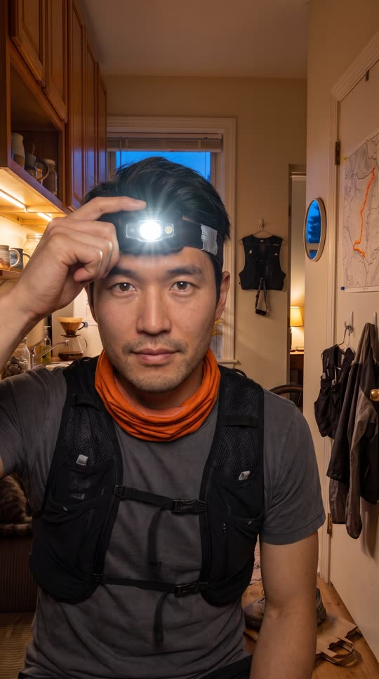

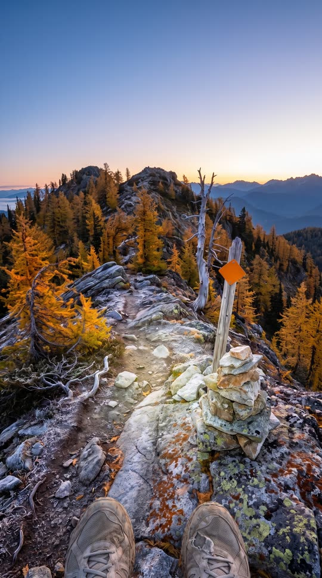
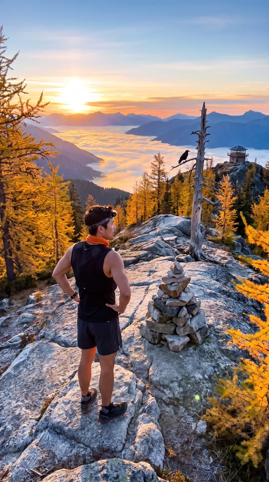
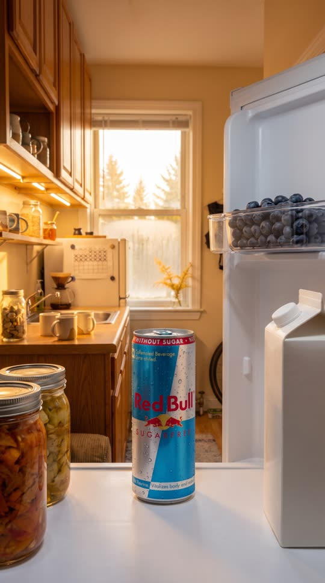
Cast and world
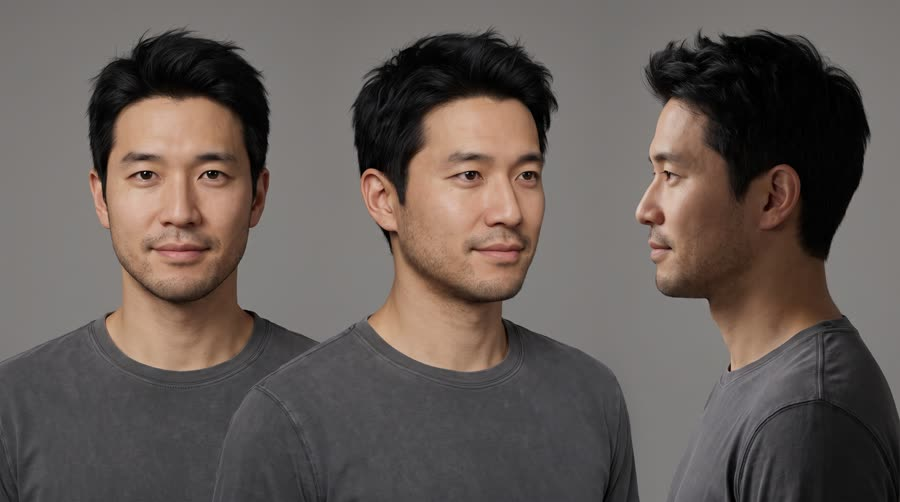
Voice: low, calm, close-mic whisper, unhurried, a little dry, American Pacific Northwest
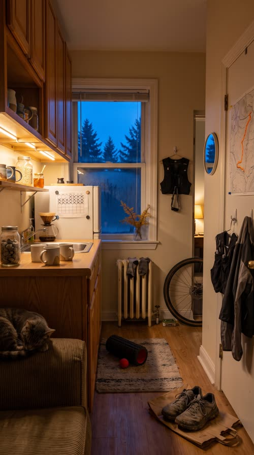
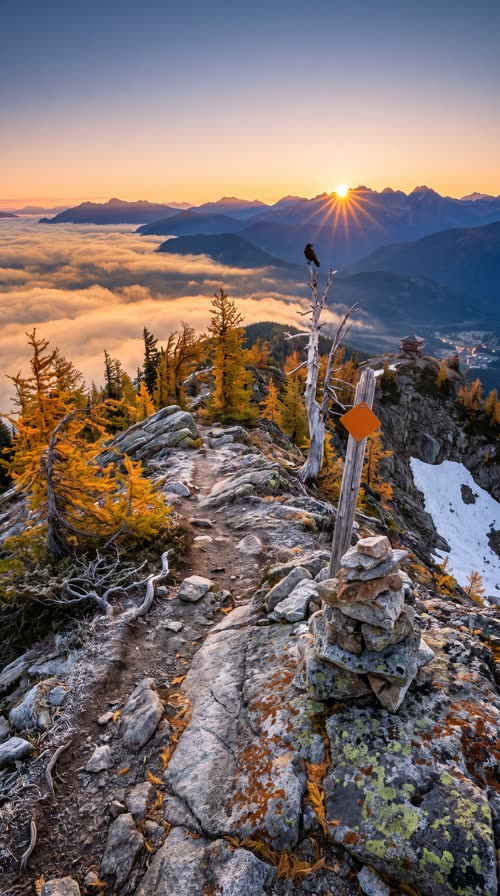
World. A small one-bedroom apartment at the edge of a mountain town in the fictional Pinecrest Valley, 4:58am in late September, then the fictional Larch Ridge trail above town at sunrise. Palette. Indoors: warm oak, cream walls, black accents, amber lamp light against deep blue-hour windows, so the cool silver and sky-blue can is the coolest thing in the room. Outdoors: blue dawn turning to gold on silver-grey granite.
Fictional brands. Larch Ridge Trail (never shown as text; the trail marker is a plain orange diamond); Pinecrest Valley (town, never shown as text)
World bible
Fixed with the concept: the lore, the objects and the textures that make this world specific. Only product-adjacent props change per product.
- Wes Tanaka works the repair counter at the only bike shop in Pinecrest Valley, which opens at 9. If the ridge is going to happen, it happens before work.
- He is in week 12 of a 16-week plan for his first 50k, the Larch Ridge Ultra on the second Saturday of October. The plan is a hand-drawn grid taped to the fridge, eleven rows crossed out in black marker.
- He has topped Larch Ridge 147 times and brings one small grey stone down from the summit cairn each time. The jar by the sink is nearly full.
- He has rented the one-bedroom above a closed hardware store for six years. The radiator clanks for the first time each autumn, and it started this week.
- Miso, a 14-year-old grey tabby, sleeps on the arm of the couch and does not get up for anyone before 7.
Wear and time. The last week of September, 4:58am to sunrise at 6:52am, about 3 degrees outside with the first frost of the season. Last night's mugs are still by the sink, the shoes are still muddy from Sunday's long run, the socks drying on the radiator are only half dry, week 12 on the fridge grid is half crossed out, and the cat has not moved. On the ridge the frost has not burned off the shaded rocks yet.
Signature objects
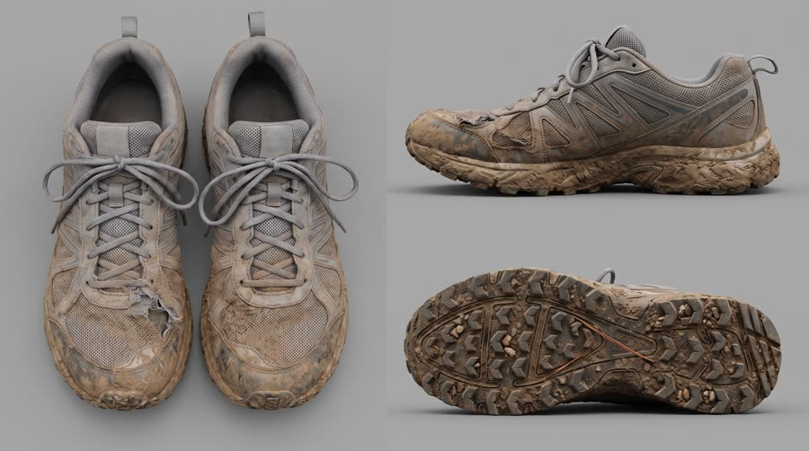
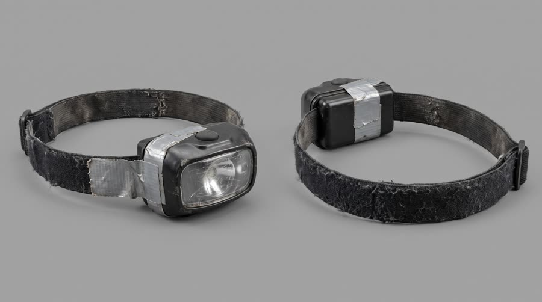
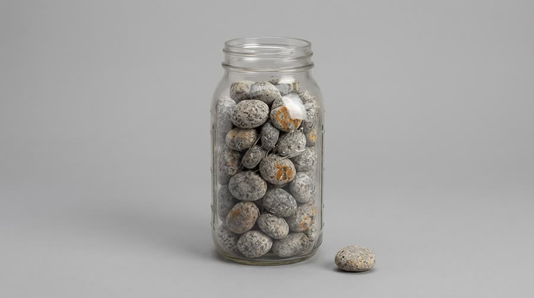
Set dressing by location
Foreground
a pair of mud-caked grey trail shoes on a flattened brown paper grocery bag by the door, laces still knotted; a glass mason jar almost full of small grey ridge stones on the counter by the sink; a foam roller and a lacrosse ball on a worn wool rug; three unwashed ceramic mugs by the sink, one with a chipped handle
Midground
a paper training grid taped to the white fridge with small round magnets, rows of hand-drawn boxes, most crossed out in black marker, no words; oak open shelves with mismatched hand-thrown mugs, a jar of oats and a jar of honey with a wooden dipper; a pour-over coffee cone on a glass carafe with yesterday's grounds still in the filter; two plain black running vests and a faded rain shell on the entry hooks; a hand-drawn topographic map of the valley pinned by the door, one route traced in orange highlighter; a bicycle wheel leaning against the hall wall with a small tyre-patch tin on the floor; wool running socks drying over the radiator
Background
the window over the sink showing deep blue pre-dawn sky and dark pine silhouettes, a film of condensation at the bottom of the glass; a small cast-iron radiator under the window with chipped cream paint; a grey tabby cat asleep on the arm of a worn corduroy couch in the dim living area; a sprig of golden larch in a jam jar on the windowsill; the doorway to the bedroom with the bedside lamp still glowing
Foreground
silver-grey granite slabs with rust-orange and pale green lichen; a narrow dirt trail with exposed roots and a thin crust of first frost in the shade; a knee-high cairn of stacked grey stones at the summit; a few fallen golden larch needles caught in the rock cracks
Midground
the plain orange diamond trail marker nailed to a weathered silver post; golden larch trees bent by the wind; a bleached dead whitebark pine snag with a raven perched on it; a patch of old snow in a north-facing gully
Background
a valley full of low golden cloud; layered blue mountain ridges fading into the distance; a tiny wooden fire lookout on a far peak; the last few warm lights of the small town far below, no city
- Wes: a thin black sports watch with a cracked bezel and a blank face; a faded orange neck gaiter worn thin at the fold; a plain black headlamp with a strip of silver duct tape holding the battery door shut; a strip of blue kinesiology tape down his left shin from an old trail fall; one small grey stone in the chest pocket of his vest
- Larch Ridge Trail: a plain orange diamond, safety orange on weathered silver wood. On: trail marker posts, the orange route line on his hand-drawn map. Text in post: none
- Pinecrest Valley Bike Co: a single pine tree inside a gear circle, forest green and cream. On: one faded mug on the open shelf. Text in post: none
the radiator clanking and hissing as it warms up; the fridge compressor humming and the door seal unsticking; laces zipping through the eyelets and a double knot pulled tight; the headlamp button clicking; gravel crunching under the shoes outside the door; wind moving through the larches; a single raven croak on the ridge
Beats
| Time | Beat | What happens |
|---|---|---|
| 0-2.2 | hook | In bed at 4:58 with the phone glowing, he whispers to the tripod: five am, come run with me. |
| 2.2-7.4 | steps | Steps one to three at a clip: feet on the cold floor, a big glass of water at the dark window, the double knot. |
| 7.4-12.0 | product | Step four slows down: the fridge light on the can, then the crack and a sip at the counter, with the name and the benefit. |
| 12.0-19.6 | build | Steps five to seven speed up again: the headlamp clicks on, the door opens into the blue dark, the climb by headlamp beam. |
| 19.6-25.2 | payoff | Step eight: the ridge at sunrise, headlamp off, the valley in cloud below. |
| 25.2-30 | cta | Back to the fridge door: step four waiting for the viewer, with the tagline. |
Screenplay
57 spoken words in 30 s. Each line keeps its intent (fixed in the template) and its wording (written for this product).
| Time | Speaker | Line | Intent (template) |
|---|---|---|---|
| 0.4-2.0 | Wes | Five a.m. Come run with me. sleepy close whisper to the tripod, a half smile | Hook: name the hard moment the routine starts at and invite the viewer in. |
| 2.4-3.9 | Wes (off camera) | Step one: feet down before the snooze. voiceover, close-mic whisper, on the beat | Step one: the first small action that beats the excuse. |
| 4.2-5.4 | Wes (off camera) | Two: big glass of water. voiceover whisper | Step two: a simple prep action. |
| 5.8-7.2 | Wes (off camera) | Three: double knot. Always. voiceover whisper, a little firm on 'always' | Step three: a personal rule that makes him feel like a pro. |
| 8.0-11.6 | Wes (off camera) | Four: Red Bull Sugarfree. The original's benefits, no sugar. voiceover, slower and clearer on the name, a small satisfied breath after the sip · Say: RED BULL SHUG-er-free, three clear words | Product step: name the product clearly and the one allowed benefit that makes it part of the routine. |
| 12.2-13.8 | Wes (off camera) | Five: headlamp. And I'm properly alert. voiceover, a touch brighter, awake now | Step five: the moment the product's benefit shows up. |
| 14.2-15.8 | Wes (off camera) | Six: out before I can think. voiceover, quick | Step six: commit before doubt. |
| 16.6-17.6 | Wes (off camera) | Seven: the climb. voiceover, breathing harder behind it | Step seven: the effort. |
| 21.0-22.0 | Wes (off camera) | Eight: this. voiceover, quiet, almost reverent, then silence | Step eight: the reward, in as few words as possible. |
| 26.0-29.6 | Wes (off camera) | Put step four in your fridge. Wiiings without sugar. voiceover, warm, a smile you can hear on the tagline · Say: WINGS, stretch the vowel slightly | In-world CTA: make the product step the viewer's own, then the tagline. |
Generation plan
U1 · 0 to 7.4 s · 8 s generation
Shots S01, S02, S03, S04 · References: wes card, apartment plate, S01 keyframe as first frame
9:16 creator morning routine video, tripod-mounted phone, clean crisp grade, small tidy apartment at 4:58am, warm amber lamps against deep blue pre-dawn windows as in @Image2. Shot 1 (0 to 2.2 s): @Image1 (Wes) propped on one elbow in bed, a face-down phone glowing on the sheets, looks into the camera and whispers sleepily: "Five a.m. Come run with me." Hard cut. Shot 2 (2.2 to 4 s): floor-level, two bare feet drop onto the cold oak floor. Hard cut. Shot 3 (4 to 5.6 s): at the sink he fills a tall glass of water in front of the blue window. Hard cut. Shot 4 (5.6 to 7.4 s, render to 8 s): straight top-down, his hands pull a double knot tight on a plain grey trail shoe. One action per shot, crisp and satisfying. Native sound, close-mic ASMR: alarm chime cut off, feet on wood, water pouring, lace snap. Only the whispered line in shot 1; no other dialogue. No music. No text on screen. No logos.
U2 · 7.4 to 12.0 s · 5 s generation · exact-risk (short, cheap to re-roll)
Shots S05, S06 · References: product can official, wes card, S05 keyframe as first frame
9:16 creator morning routine video, same clean grade. Shot 1 (0 to 2 s): locked off from inside a compact fridge, the door swings open and the fridge light falls on the exact can from @Image1 standing alone in the door shelf, label to camera; a hand reaches in and takes it. Hard cut. Shot 2 (2 to 4.6 s): at the oak counter at counter height, @Image2 (Wes) cracks the can with a crisp crack and fizz, takes one sip, and lowers it to chest height with the label to camera, a small satisfied exhale, blue window behind. Keep the can's shape, colours, wordmark, two red bulls and gold sun exactly as @Image1. One can only. Native sound: fridge seal pop, can crack, exhale. No dialogue (voiceover added in post). No music.
U3 · 12.0 to 25.2 s · 14 s generation
Shots S07, S08, S09, S10 · References: wes card, ridge plate, S07 keyframe as first frame
9:16 creator routine video moving from indoors to a mountain sunrise. Shot 1 (0 to 2 s): locked medium close-up, @Image1 (Wes) in a plain black running vest clicks a plain black headlamp on over his forehead, the beam flares toward camera. Hard cut. Shot 2 (2 to 4.2 s): wide from inside the entry, he steps out of the open front door onto gravel into deep blue darkness and pines, headlamp beam cutting the mist. Hard cut. Shot 3 (4.2 to 7.6 s): handheld first-person view running up a steep rocky switchback, headlamp beam bouncing over rocks, the sky lightening at the top. Hard cut. Shot 4 (7.6 to 13.2 s): locked wide on a granite ridge as in @Image2, Wes arrives, clicks the headlamp off, stands with hands on hips catching his breath as the sun breaks over a valley of golden cloud. Upright vertical composition, level horizon, normal gravity. Native sound: headlamp click, door latch, wind, footsteps on gravel and rock, hard breathing that slows at the top. No dialogue (voiceover added in post). No music. No logos.
U4 · 25.2 to 30 s · 5 s generation · exact-risk (short, cheap to re-roll)
Shots S11 · References: product can official, apartment plate, S11 keyframe as first frame
9:16 creator routine video, clean crisp grade. Locked off from inside a compact fridge, the door swings open and the fridge light falls on the exact can from @Image1 standing alone and upright in the door shelf, label to camera, condensation beads; a very slow push-in; beyond the door, the empty kitchen from @Image2 now in golden morning light. The can does not move or change: keep its shape, colours, wordmark, two red bulls and gold sun exactly as @Image1. Keep a clean area above the can. Native sound: fridge seal pop, fridge hum. No dialogue (voiceover added in post). No music, no text.
Sound, music, voice, captions
| 0 to 12.0 s | steps | Warm lo-fi house bed, 118 bpm, soft kick, muted guitar pluck and a vinyl hiss, sat low so the ASMR foley stays loud; each step cut lands on a kick. Drops to just the pad under the product step from 7.4 s so the can crack and the name sit clean. |
| 12.0 to 19.6 s | out the door | The full beat comes back on the headlamp click, hi-hats added on the climb, energy rising with his breathing. |
| 19.6 to 30 s | sunrise | Beat drops out on 'Eight: this', one wide warm synth chord and the wind; a gentle return of the guitar pluck under the CTA, ending on the tonic. |
Added sound
- 9.6 s: can crack and fizz, close ASMR mic (the product moment must register; only added if the native crack is weak)
- 12.1 s: headlamp click (marks the moment the benefit lands; the edit rides on it)
- Wes: native whisper in U1 S01; all voiceover lines L2 to L10 generated in post with a TTS voice cloned from his U1 stem (close-mic whisper preset), with the phonetic spelling for the brand line and tagline
font: Inter Bold, size: 4.6% of frame height, color: #FFFFFF, active word: none: the whole short line appears at once, it is a label not a karaoke caption, shadow: soft 0 2px 10px rgba(0,0,0,.55), box: False, position: centre, 72% down the frame, above the platform UI safe zone, max words on screen: 5, step sticker: large numeral in Inter Black, 11% of frame height, white, inside a 1.6 px white outline circle, upper left at 8% from the top and sides, with a small '/8' after it at 40% size; ticks on with a 4 frame scale from 90 to 100 percent on each step cut, timestamp: 4:58 AM in small Inter Medium caps under the step sticker for the hook only
Post text- 0 to 2.2 s: 4:58 AM / (small Inter Medium caps, white, upper left under where the step sticker will sit, fades on at frame 1)
- 2.2 to 25.2 s: Step stickers 1/8 to 8/8, one per step cut (1 at 2.2 s, 2 at 4.0, 3 at 5.6, 4 at 7.4 and held through 12.0, 5 at 12.0, 6 at 14.0, 7 at 16.2, 8 at 19.6) / (large white Inter Black numeral inside a thin white outline circle with a small '/8', upper left, 4 frame scale-on per step; step 4 gets a subtle sky-blue fill to mark the product step)
- 27.0 to 30 s: Red Bull Sugarfree / Wiiings without sugar (Inter Bold, white, centred in the clean area above the can, fade up 8 frames, with a final '4/8' step sticker ticking on beside it)
Adaptation contract
How this same concept takes any physical product.
| Product type | Where it sits in the story | Scale |
|---|---|---|
| ingested | step four: from the fridge, cracked and sipped at the counter before the headlamp goes on | hand |
| applied | step four: applied at the entry mirror before heading out (sunscreen, anti-chafe balm, lip balm, hair product) | face or hand |
| worn | step four: put on at the door (socks, base layer, watch, glasses, shoes) | body |
| handheld | step four: picked up and switched on at the counter (earbuds, tracker, soft flask, phone armband) | hand |
| carried | step four: packed and zipped at the counter (running vest, belt, small backpack) | hand to torso |
| home | step four: the thing he uses at home before leaving (foam roller, coffee maker, sunrise lamp, mat) | room |
| consumable | step four: the refill or pack from the cupboard (gel, electrolyte tab, bar), torn and used at the counter | hand |
| product_adjacent_props | the fridge door around the product (jars, carton, blueberries) and the counter spot where step four happens are generic and swap per product; the shoes, headlamp, stone jar and map are his and stay | swap per product |
Style bible
Look. Every step is one action in one tidy shot, framed so the action reads instantly at phone size: top-down for hands on surfaces, floor-level for feet, mirror or tripod medium for the body, macro for textures. Match cuts on motion carry step to step (a hand leaves one frame, enters the next). Spaces are clean, warm and a little aspirational but real (small apartment, not a showroom). The product step gets two shots: the reach and the use. A numbered step sticker on every step, added in post.
Camera. Creator-owned kit: a phone or small mirrorless camera on a mini tripod or clamp, 24mm to 28mm, mostly locked off; one handheld POV walking shot outdoors. Top-down from a counter arm, low floor-level for feet, one mirror shot. Clean focus, moderate depth of field (background soft but recognisable). No drones, no cranes, no dolly moves.
Light and texture. Motivated and pretty: warm under-cabinet and lamp light inside against deep blue-hour window light, then the payoff in real golden sunrise. The fridge light is the product's key light. Clean exposure, no crushed blacks. Crisp creator-video look: clean, slightly warm grade, lifted blacks, gentle contrast, a little phone-camera sharpening, no film grain, no halation. Skin real, not retouched.
Pacing. Spoken hook on camera in the first 2 s, then one step every 1.6 to 2.4 s, cut on the beat of the music bed. The product step slows to about 4.5 s across two shots (reach, then use) so it is held and remembered. The final step is the longest (the reward) at 5 to 6 s, then a still CTA shot.
Sound. Close-mic ASMR foley for every step, loud and crisp (alarm tap, bare feet on wood, water pour, lace pull, fridge seal, can crack, headlamp click, door, gravel, wind). A whispered close-mic voiceover names each step. A light music bed with a clear pulse, added in post under everything, so units generate with native foley only and no music.
Known failures.
- steps blur together because two actions share a frame: one action per shot, name the single action and the body part in the prompt
- top-down counter shots come back tilted at a random angle: say 'straight top-down overhead view, counter edge parallel to the bottom of the frame'
- the fridge fills with generic bottles and branded packs: say the fridge door holds one can like the product, glass jars of homemade food and plain unlabelled cartons only
- the headlamp or running vest grows a logo or readable text: say plain black with no text or logos
- mirror shots double his body or flip the can label: keep the can out of every mirror shot
- phone alarm screen shows readable model text: phone lies face down or the screen is a plain glow, the time is added in post
- outdoor wide shots come back rotated: say upright vertical composition, level horizon, runner standing on the ground
- the product step reads as an ad break if it is suddenly cinematic: keep the same tripod height, light and grade as the steps around it
- bedside hooks come back with a digital clock showing readable model-drawn digits and a visible tripod: say no clock, no numbered screens, and that we are seeing through the tripod camera; the time goes on in post
- POV prompts that ask for motion blur come back as a sharp inset between blurred side panels (twice in a row): ask for a uniformly sharp full-bleed frame with no motion blur, and add the motion in the video unit instead
- mountain-town windows default to a city skyline: name what the window shows (pines, ridge, no city)
- multi-view prop sheets that name the views in brackets come back with the view names printed as captions: describe the views without naming them as labels and say no captions on the sheet
- once a prop reference of the shoes is attached, the shoe comes back empty on the floor while he ties it: say his foot is inside the shoe
- naming the tripod in a keyframe prompt draws it into frame even with 'no tripod visible': describe the camera position (nightstand height) and never use the word
Claims and cost
Claims used (all from the product page): Same benefits of the original Energy Drink, without sugar; Caffeine helps to improve concentration and increase alertness; Wiiings without sugar (tagline)
Video estimate: 32 s of generation at $0.27/s = $8.64 first pass, $18 to 26 with retakes, plus about $1.5 music.